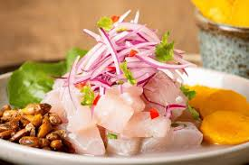
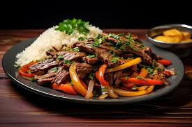
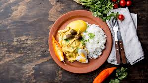
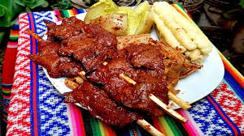
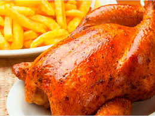
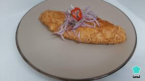
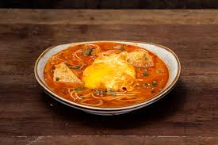
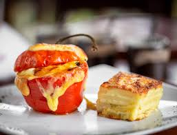
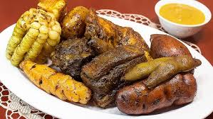

CEVICHE
Preparación: Corta el pescado en cubos y colócalo en un tazón. Agrega el jugo de limón y mezcla. Deja reposar por 10-15 minutos. Mientras, corta la cebolla en plumas y el ají en rodajas. Añade la cebolla, el ají, el cilantro picado y sal al pescado. Sirve frío, acompañado de maíz chulpe y camote.
LOMO SALTADO
Preparación: Cocina el arroz y reserva. Corta la carne en tiras y sofríela en una sartén caliente con aceite. Añade la cebolla, el ají y el tomate en tiras. Sofríe por unos minutos. Agrega un chorrito de salsa de soja, sal y pimienta. Fríe las papas en otra sartén. Sirve la mezcla de carne sobre el arroz, acompañado de papas fritas.
AJI DE GALLINA
Preparación: Cocina el pollo en agua con sal. Desmenuza y reserva el caldo. Sofríe la cebolla picada y los ajíes en una sartén. Licúa las nueces con el pan remojado en leche. Agrega la mezcla de nuez y pan a la sartén con cebolla y ají, y mezcla con el caldo hasta obtener una salsa espesa. Incorpora el pollo desmenuzado a la salsa y cocina unos minutos. Sirve con arroz blanco y decora con huevo duro.
ANTICUCHO
Preparación: Corta el corazón en cubos y marina en una mezcla de ají panca licuado, cebolla, vinagre, sal y pimienta. Ensarta los cubos en palitos. Asa a la parrilla hasta que estén dorados, aproximadamente 10-15 minutos. Sirve con papas y salsa de ají.
CAUSA RELLENA
Preparación: Cocina las papas y haz un puré. Mezcla con ají amarillo, limón y sal. Mezcla el atún desmenuzado con cebolla picada y mayonesa. En un molde, coloca una capa de puré, seguida del relleno y otra capa de puré. Desmolda y decora con aguacate y huevo duro.

POLLO A LA BRASA
Ingredientes: 1 pollo entero 2 cucharadas de ajo 2 cucharadas de comino 1 cucharada de paprika 1 cucharada de salsa de soja Sal y pimienta Papas fritas
TACU TACU
Fernando Batista es un director técnico argentino que asumió la dirección de la selección venezolana en 2023. Anteriormente, trabajó en las categorías juveniles de Argentina y dirigió varios equipos en ligas locales. Es conocido por su enfoque en el juego ofensivo y su habilidad para desarrollar jóvenes talentos. Su objetivo es mejorar el rendimiento de Venezuela en competiciones internacionales y fortalecer su competitividad en el fútbol sudamericano.
SOPA A LA CRIOLLA
Preparación: Cocina la carne en agua con sal y cebolla hasta que esté tierna. Agrega las papas y zanahorias cortadas. Incorpora los fideos y cocina hasta que estén al dente. Añade un huevo batido y mezcla bien. Sirve caliente, espolvoreado con cilantro.
ROCOTO RELLENO
Preparación: Cocina los rocotos en agua con sal para suavizarlos y retira las semillas. Sofríe la cebolla y agrega la carne, aceitunas y huevo duro picado. Rellena los rocotos con la mezcla, cubre con queso y hornea a 180°C hasta dorar.
PACHAMANCA
Preparación: Marina las carnes con sal y hierbas. Prepara un pozo y coloca las piedras calientes. Alterna capas de carne, papas y más hierbas. Cubre con hojas y cocina por varias horas. Sirve caliente, disfrutando del sabor ahumado.
El ceviche tiene raíces precolombinas, con evidencia de que las culturas que habitaban la costa peruana ya marinaban pescado en jugo de limón. Con el tiempo, se ha convertido en un ícono de la gastronomía peruana y ha evolucionado, incorporando ingredientes como el ají y la cebolla.
Este plato es una fusión de la cocina china y peruana, resultado de la inmigración china en el siglo XIX. Los inmigrantes trajeron técnicas de salteado y la combinación de ingredientes locales, creando un plato que refleja la diversidad cultural del Perú.
El ají de gallina tiene orígenes coloniales, combinando técnicas de cocina indígenas con ingredientes traídos por los españoles, como el pollo. Su nombre se relaciona con el ají amarillo, un ingrediente esencial en la cocina peruana.
Los anticuchos tienen sus raíces en la época precolombina, cuando se utilizaban partes del animal que no eran comunes en otras cocinas. Originalmente, se hacían con carne de llama, pero el corazón de res se popularizó tras la llegada de los españoles, convirtiéndose en un plato tradicional.
La causa tiene orígenes indígenas, donde se usaba papa amarilla, un tubérculo andino. Su nombre proviene del término quechua "kausay", que significa "vida" o "sustento". A lo largo del tiempo, se han creado diversas versiones, incluyendo rellenos de atún y pollo.
Creado en la década de 1950 por un inmigrante suizo, el pollo a la brasa combina técnicas de cocina suizas y peruanas. Su popularidad ha crecido enormemente, convirtiéndose en un símbolo de la comida rápida peruana.
El tacu tacu se originó entre los afroperuanos, que combinaban sobras de arroz y frijoles en una sola preparación. Este plato refleja la influencia afroperuana en la gastronomía, y se ha convertido en un clásico en la cocina peruana.
Esta sopa tiene influencias de la cocina andina y española. Se caracteriza por ser un plato reconfortante, especialmente popular en la sierra. Su mezcla de ingredientes refleja la diversidad de la gastronomía peruana.
El rocoto relleno proviene de Arequipa y se remonta a la época colonial. Este plato destaca por su uso de rocoto, un ají picante andino, y su influencia se puede ver en las diferentes técnicas de relleno y cocción.
La pachamanca es un plato tradicional andino que se remonta a las culturas preincaicas. Se cocina al aire libre, utilizando piedras calientes enterradas en un pozo. Su nombre proviene de "Pachamama", la madre tierra, y simboliza la conexión con la naturaleza y la comunidad.